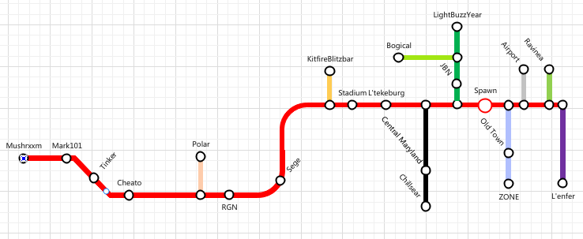

Regular Use
Keep on the right side of the track
When at an intersection, the default path is to stay straight. If you cannot go straight (say you are coming
onto a straight path from a spur), then the defualt path is to go right.
To change your destination from the default to the secondary, you hit the noteblock interface.
- Example: Heading on a straight path. Hit the noteblock to go onto the spur.
- Example: On a spur to a straight path, Hit the noteblock to head left on the main track.
Map Reading and Information
Each track is colorcoded to represent what it is. For example, the "
Main" track's color is
red.
Each station along a track is labeled with a
black dot and its name.
Where different tracks meet, there will be a station that gives the option to stay or switch tracks.
Map
